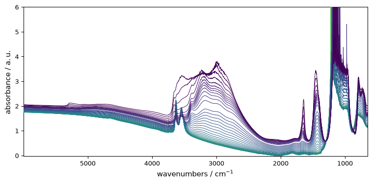
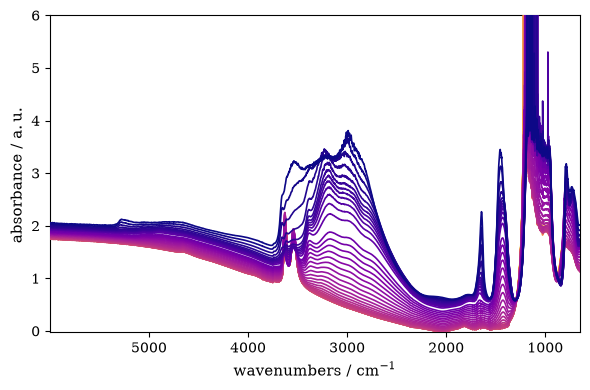

Plotting Preferences
While keyword arguments customize individual plots, preferences control persistent defaults that affect all future plots in the current session and the following ones.
Accessing Preferences
[1]:
import spectrochempy as scp
prefs = scp.preferences
Preferences are organized by category. The most commonly used are:
[2]:
print("Figure size:", prefs.figure.figsize)
print("Default colormap:", prefs.colormap)
print("Font family:", prefs.font.family)
print("Current style:", prefs.style)
Figure size: (6, 4)
Default colormap: auto
Font family: sans-serif
Current style: scpy
Changing Defaults
Set a preference once; it affects all subsequent plots:
[3]:
ds = scp.read("irdata/nh4y-activation.spg")
[4]:
# Save original values for later restoration
original_cmap = prefs.colormap
original_figsize = prefs.figure.figsize
[5]:
# Change defaults
prefs.colormap = "magma"
prefs.figure.figsize = (8, 4)
Now all plots use these new defaults:
[6]:
_ = ds.plot()

Resetting to Defaults
[7]:
# Restore original values
prefs.colormap = original_cmap
prefs.figure.figsize = original_figsize
Alternatively, reset all plotting preferences to defaults:
[8]:
prefs.reset()
Common Preferences
Preference |
Description |
|---|---|
|
Default colormap for plots (“auto” for automatic selection) |
|
Default sequential colormap (e.g., “viridis”) |
|
Default diverging colormap (e.g., “RdBu_r”) |
|
Default figure (width, height) |
|
Font family (sans-serif, serif, monospace) |
|
Default font size |
|
Show grid by default |
|
Default visual style |
Example: setting font and colormap:
[9]:
prefs.font.family = "serif"
prefs.colormap_sequential = "plasma"
_ = ds.plot()

[10]:
# Reset for other examples
prefs.reset()
Group Access
Preferences can be accessed by group. For example, all line-related preferences:
[11]:
prefs.lines
[11]:
lines
Or all font-related preferences:
[12]:
prefs.font
[12]:
font
Getting Help
Get help on a specific preference:
[13]:
prefs.help("colormap")
colormap = auto [default: auto]
Colormap name or 'auto' for automatic selection based on data
The Mental Model
Keyword arguments (
ds.plot(cmap="red")) → single plotPreferences (
prefs.colormap = "red") → all future plotsStyle (
ds.plot(style="grayscale")) → appearance theme
Use preferences for session-long defaults; kwargs for one-off changes.
Below is the list of all available preferences:
[14]:
prefs.list_all() # Uncomment to see all preferences
agg_path_chunksize = 20000 [default: 20000]
0 to disable; values in the range 10000 to 100000 can improve speed slightly and
prevent an Agg rendering failure when plotting very large data sets, especially
if they are very gappy. It may cause minor artifacts, though. A value of 20000
is probably a good starting point.
antialiased = True [default: True]
antialiased option for surface plot
axes3d_azim = 10.0 [default: 10.0]
Default azimuth angle (degrees) for 3D plots
axes3d_elev = 30.0 [default: 30.0]
Default elevation angle (degrees) for 3D plots
axes3d_grid = True [default: True]
display grid on 3d axes
axes_autolimit_mode = data [default: data]
How to scale axes limits to the data. Use "data" to use data limits, plus some
margin. Use "round_number" move to the nearest "round" number
axes_axisbelow = True [default: True]
whether axis gridlines and ticks are below the axes elements (lines, text, etc)
axes_edgecolor = black [default: black]
axes edge color
axes_facecolor = white [default: F0F0F0]
axes background color
axes_formatter_limits = (-5, 6) [default: traitlets.Undefined]
use scientific notation if log10 of the axis range is smaller than the first or
larger than the second
axes_formatter_offset_threshold = 4 [default: 4]
When useoffset is True, the offset will be used when it can remove at least this
number of significant digits from tick labels.
axes_formatter_use_locale = False [default: False]
When True, format tick labels according to the user"s locale. For example, use
"," as a decimal separator in the fr_FR locale.
axes_formatter_use_mathtext = False [default: False]
When True, use mathtext for scientific notation.
axes_formatter_useoffset = False [default: False]
If True, the tick label formatter will default to labeling ticks relative to an
offset when the data range is small compared to the minimum absolute value of
the data.
axes_grid = False [default: False]
display grid or not
axes_grid_axis = both [default: both]
axes_grid_which = major [default: major]
axes_labelcolor = black [default: black]
axes_labelpad = 4.0 [default: 4.0]
space between label and axis
axes_labelsize = 11.0 [default: 10.0]
fontsize of the x any y labels
axes_labelweight = normal [default: normal]
weight of the x and y labels
axes_linewidth = 0.8 [default: 0.8]
edge linewidth
axes_prop_cycle = cycler('color', ['007200', '009E73', 'D55E00', 'CC79A7', 'F0E442', '56B4E9']) [default: cycler('color', ['007200', '009E73', 'D55E00', 'CC79A7', 'F0E442', '56B4E9'])]
color cycle for plot lines as list of string colorspecs: single letter, long
name, or web-style hex
axes_spines_bottom = True [default: True]
axes_spines_left = True [default: True]
axes_spines_right = True [default: True]
axes_spines_top = True [default: True]
axes_titlepad = 5.0 [default: 5.0]
pad between axes and title in points
axes_titlesize = 12.0 [default: 14.0]
fontsize of the axes title
axes_titleweight = normal [default: normal]
font weight for axes title
axes_titley = 1.0 [default: 1.0]
at the top, no autopositioning.
axes_unicode_minus = True [default: True]
use unicode for the minus symbol rather than hyphen. See
http://en.wikipedia.org/wiki/Plus_and_minus_signs#Character_codes
axes_xmargin = 0.05 [default: 0.05]
x margin. See `axes.Axes.margins`
axes_ymargin = 0.05 [default: 0.05]
y margin See `axes.Axes.margins`
baseline_region_alpha = 0.5 [default: 0.5]
Transparency for baseline region spans
baseline_region_color = #2ca02c [default: #2ca02c]
Color for baseline fitting region spans
ccount = 50 [default: 50]
ccount (steps in the column mode) for surface plot
colorbar = None [default: None]
Colorbar policy: None=auto, True=always, False=never
colormap = auto [default: auto]
Colormap name or 'auto' for automatic selection based on data
colormap_categorical_large = tab20 [default: tab20]
Default colormap for categorical data with > threshold categories
colormap_categorical_small = tab10 [default: tab10]
Default colormap for categorical data with <= threshold categories
colormap_categorical_threshold = 10 [default: 10]
Threshold for switching between small and large categorical colormaps
colormap_diverging = RdBu_r [default: RdBu_r]
Default colormap for diverging data (mixed positive and negative)
colormap_sequential = plasma [default: viridis]
Default colormap for sequential data (all positive or all negative)
contour_alpha = 1.0 [default: 1.0]
Transparency of the contours
contour_corner_mask = True [default: True]
True | False | legacy
contour_negative_linestyle = dashed [default: dashed]
dashed | solid
contour_start = 0.05 [default: 0.05]
Fraction of the maximum for starting contour levels
date_autoformatter_day = %b %d %Y [default: %b %d %Y]
date_autoformatter_hour = %H:%M:%S [default: %H:%M:%S]
date_autoformatter_microsecond = %H:%M:%S.%f [default: %H:%M:%S.%f]
date_autoformatter_minute = %H:%M:%S.%f [default: %H:%M:%S.%f]
date_autoformatter_month = %b %Y [default: %b %Y]
date_autoformatter_second = %H:%M:%S.%f [default: %H:%M:%S.%f]
date_autoformatter_year = %Y [default: %Y]
errorbar_capsize = 1.0 [default: 1.0]
length of end cap on error bars in pixels
figure_autolayout = True [default: True]
When True, automatically adjust subplot parameters to make the plot fit the
figure
figure_dpi = 100.0 [default: 96.0]
figure dots per inch
figure_edgecolor = white [default: white]
figure edgecolor
figure_facecolor = white [default: white]
figure facecolor; 0.75 is scalar gray
figure_figsize = (6.0, 4.0) [default: traitlets.Undefined]
figure size in inches
figure_frameon = True [default: True]
Show figure frame
figure_max_open_warning = 30 [default: 30]
The maximum number of figures to open through the pyplot interface before
emitting a warning. If less than one this feature is disabled.
figure_subplot_bottom = 0.12 [default: 0.12]
the bottom of the subplots of the figure
figure_subplot_hspace = 0.0 [default: 0.0]
the amount of height reserved for white space between subplots, expressed as a
fraction of the average axis height
figure_subplot_left = 0.15 [default: 0.15]
the left side of the subplots of the figure
figure_subplot_right = 0.95 [default: 0.95]
the right side of the subplots of the figure
figure_subplot_top = 0.98 [default: 0.98]
the top of the subplots of the figure
figure_subplot_wspace = 0.0 [default: 0.0]
the amount of width reserved for blank space between subplots, expressed as a
fraction of the average axis width
figure_titlesize = 12.0 [default: 12.0]
size of the figure title (Figure.suptitle())
figure_titleweight = normal [default: normal]
weight of the figure title
figure_window_position = None [default: None]
Position of figure window (x, y) in screen pixels for TkAgg backend. None = let
window manager decide. Negative values allowed for multi-monitor.
font_family = sans-serif [default: sans-serif]
sans-serif|serif|cursive|monospace|fantasy
font_size = 11.0 [default: 10.0]
The default fontsize. Special text sizes can be defined relative to font.size,
using the following values: xx-small, x-small, small, medium, large, x-large,
xx-large, larger, or smaller
font_style = normal [default: normal]
normal (or roman), italic or oblique
font_variant = normal [default: normal]
font_weight = normal [default: normal]
100|200|300|normal or 400|500|600|bold or 700|800|900|bolder|lighter
grid_alpha = 1.0 [default: 1.0]
transparency, between 0.0 and 1.0
grid_color = .85 [default: .85]
grid color
grid_linestyle = - [default: -]
solid
grid_linewidth = 0.85 [default: 0.85]
in points
hatch_color = black [default: black]
hatch_linewidth = 1.0 [default: 1.0]
hist_bins = auto [default: auto]
The default number of histogram bins. May be an integer or 'auto'.
image_composite_image = True [default: True]
When True, all the images on a set of axes are combined into a single composite
image before saving a figure as a vector graphics file, such as a PDF.
image_equal_aspect = True [default: True]
Enforce equal physical aspect ratio for 2D image data when units are compatible
image_interpolation = antialiased [default: antialiased]
see help(imshow) for options
image_lut = 256 [default: 256]
the size of the colormap lookup table
image_origin = upper [default: upper]
lower | upper
image_resample = True [default: True]
latex_preamble = \usepackage{siunitx}
\sisetup{detect-all}
\usepackage{times} # set the normal font here
\usepackage{sansmath}
# load up the sansmath so that math -> helvet
\sansmath
[default: \usepackage{siunitx}
\sisetup{detect-all}
\usepackage{times} # set the normal font here
\usepackage{sansmath}
# load up the sansmath so that math -> helvet
\sansmath
]
Latex preamble for matplotlib outputs IMPROPER USE OF THIS FEATURE WILL LEAD TO
LATEX FAILURES. preamble is a comma separated list of LaTeX statements that are
included in the LaTeX document preamble. An example: text.latex.preamble :
\usepackage{bm},\usepackage{euler} The following packages are always loaded with
usetex, so beware of package collisions: color, geometry, graphicx, type1cm,
textcomp. Adobe Postscript (PSSNFS) font packages may also be loaded, depending
on your font settings.
legend_borderaxespad = 0.5 [default: 0.5]
the border between the axes and legend edge
legend_borderpad = 0.4 [default: 0.4]
border whitespace
legend_columnspacing = 0.5 [default: 0.5]
column separation
legend_edgecolor = 0.8 [default: 0.8]
background patch boundary color
legend_facecolor = inherit [default: inherit]
inherit from axes.facecolor; or color spec
legend_fancybox = True [default: True]
if True, use a rounded box for the legend background, else a rectangle
legend_fontsize = 10.0 [default: 9.0]
legend_framealpha = 0.8 [default: 0.8]
Legend patch transparency (float or 'None')
legend_frameon = False [default: False]
if True, draw the legend on a background patch
legend_handleheight = 0.7 [default: 0.7]
the height of the legend handle
legend_handlelength = 2.0 [default: 2.0]
the length of the legend lines
legend_handletextpad = 0.1 [default: 0.1]
the space between the legend line and legend text
legend_labelspacing = 0.2 [default: 0.2]
the vertical space between the legend entries
legend_loc = best [default: best]
legend_markerscale = 1.0 [default: 1.0]
the relative size of legend markers vs. original
legend_numpoints = 1 [default: 1]
the number of marker points in the legend line
legend_scatterpoints = 1 [default: 1]
number of scatter points
legend_shadow = False [default: False]
if True, give background a shadow effect
lines_antialiased = True [default: True]
render lines in antialiased (no jaggies)
lines_dash_capstyle = butt [default: butt]
butt|round|projecting
lines_dash_joinstyle = round [default: round]
miter|round|bevel
lines_dashdot_pattern = (3.0, 5.0, 1.0, 5.0) [default: traitlets.Undefined]
lines_dashed_pattern = (6.0, 6.0) [default: traitlets.Undefined]
lines_dotted_pattern = (1.0, 3.0) [default: traitlets.Undefined]
lines_linestyle = - [default: -]
solid line
lines_linewidth = 1.2 [default: 0.75]
line width in points
lines_marker = None [default: None]
the default marker
lines_markeredgecolor = auto [default: auto]
the default markeredgecolor
lines_markeredgewidth = 0.0 [default: 0.0]
the line width around the marker symbol
lines_markerfacecolor = auto [default: auto]
the default markerfacecolor
lines_markersize = 5.5 [default: 7.0]
markersize, in points
lines_scale_dashes = False [default: False]
lines_solid_capstyle = round [default: round]
butt|round|projecting
lines_solid_joinstyle = round [default: round]
miter|round|bevel
markers_fillstyle = full [default: full]
full|left|right|bottom|top|none
mathtext_bf = dejavusans:bold [default: dejavusans:bold]
bold
mathtext_cal = cursive [default: cursive]
mathtext_default = regular [default: regular]
The default font to use for math. Can be any of the LaTeX font names, including
the special name "regular" for the same font used in regular text.
mathtext_fallback_to_cm = False [default: False]
When True, use symbols from the Computer Modern fonts when a symbol can not be
found in one of the custom math fonts.
mathtext_fontset = dejavusans [default: dejavusans]
Should be "dejavusans" (default), "dejavuserif", "cm" (Computer Modern), "stix",
"stixsans" or "custom"
mathtext_it = dejavusans:italic [default: dejavusans:italic]
italic
mathtext_rm = dejavusans [default: dejavusans]
mathtext_sf = sans\-serif [default: sans\-serif]
mathtext_tt = monospace [default: monospace]
max_lines_in_stack = 1000 [default: 1000]
Maximum number of lines to plot in stack plots
number_of_contours = 50 [default: 50]
Number of contours
number_of_x_labels = 5 [default: 5]
Number of X labels
number_of_y_labels = 5 [default: 5]
Number of Y labels
number_of_z_labels = 5 [default: 5]
Number of Z labels
patch_antialiased = True [default: True]
render patches in antialiased (no jaggies)
patch_edgecolor = black [default: black]
if forced, or patch is not filled
patch_facecolor = 4C72B0 [default: 4C72B0]
patch_force_edgecolor = False [default: False]
True to always use edgecolor
patch_linewidth = 0.3 [default: 0.3]
edge width in points.
path_simplify = True [default: True]
When True, simplify paths by removing "invisible" points to reduce file size and
increase rendering speed
path_simplify_threshold = 0.111111111111 [default: 0.111111111111]
The threshold of similarity below which vertices will be removed in the
simplification process
path_sketch = None [default: None]
May be none, or a 3-tuple of the form (scale, length, randomness). *scale* is
the amplitude of the wiggle perpendicular to the line (in pixels). *length* is
the length of the wiggle along the line (in pixels). *randomness* is the factor
by which the length is randomly scaled.
path_snap = True [default: True]
When True, rectilinear axis-aligned paths will be snapped to the nearest pixel
when certain criteria are met. When False, paths will never be snapped.
polaraxes_grid = True [default: True]
display grid on polar axes
rcount = 50 [default: 50]
rcount (steps in the row mode) for surface plot
savefig_bbox = standard [default: standard]
"tight" or "standard". "tight" is incompatible with pipe-based animation
backends but will worked with temporary file based ones: e.g. setting
animation.writer to ffmpeg will not work, use ffmpeg_file instead
savefig_directory = [default: ]
default directory in savefig dialog box, leave empty to always use current
working directory
savefig_dpi = 300 [default: 300]
figure dots per inch or "figure"
savefig_edgecolor = white [default: white]
figure edgecolor when saving
savefig_facecolor = white [default: white]
figure facecolor when saving
savefig_format = png [default: png]
png, ps, pdf, svg
savefig_jpeg_quality = 95 [default: 95]
when a jpeg is saved, the default quality parameter.
savefig_pad_inches = 0.1 [default: 0.1]
Padding to be used when bbox is set to "tight"
savefig_transparent = False [default: False]
setting that controls whether figures are saved with a transparent background by
default
scatter_marker = o [default: o]
The default marker type for scatter plots.
show_projection_x = False [default: False]
Show projection along x
show_projection_y = False [default: False]
Show projection along y
show_projections = False [default: False]
Show all projections
style = scpy [default: scpy]
Matplotlib style(s) to apply
stylesheets = /home/runner/work/spectrochempy/tempdirs/scp_4anuv1nx/src/spectrochempy/plotting/stylesheets [default: ]
Directory where to look for local defined matplotlib styles when they are not in
the standard location
text_antialiased = True [default: True]
If True (default), the text will be antialiased. This only affects the Agg
backend.
text_color = .15 [default: .15]
text_hinting = auto [default: auto]
May be one of the following: 'none': Perform no hinting * 'auto': Use freetype's
autohinter * 'native': Use the hinting information in the font file, if
available, and if your freetype library supports it * 'either': Use the native
hinting information or the autohinter if none is available. For backward
compatibility, this value may also be True === 'auto' or False === 'none'.
text_hinting_factor = 8.0 [default: 8]
Specifies the amount of softness for hinting in the horizontal direction. A
value of 1 will hint to full pixels. A value of 2 will hint to half pixels etc.
text_usetex = False [default: False]
use latex for all text handling. The following fonts are supported through the
usual rc parameter settings: new century schoolbook, bookman, times, palatino,
zapf chancery, charter, serif, sans-serif, helvetica, avant garde, courier,
monospace, computer modern roman, computer modern sans serif, computer modern
typewriter. If another font is desired which can loaded using the LaTeX
\usepackage command, please inquire at the matplotlib mailing list
timezone = UTC [default: UTC]
a IANA timezone string, e.g., US/Central or Europe/Paris
use_plotly = False [default: False]
Use Plotly instead of MatPlotLib for plotting (mode Matplotlib more suitable for
printing publication ready figures)
xtick_bottom = True [default: True]
draw ticks on the bottom side
xtick_color = .15 [default: .15]
color of the tick labels
xtick_direction = out [default: out]
direction
xtick_labelsize = 10.0 [default: 10.0]
fontsize of the tick labels
xtick_major_bottom = True [default: True]
draw x axis bottom major ticks
xtick_major_pad = 3.5 [default: 3.5]
distance to major tick label in points
xtick_major_size = 3.5 [default: 3.5]
major tick size in points
xtick_major_top = True [default: True]
draw x axis top major ticks
xtick_major_width = 0.8 [default: 0.8]
major tick width in points
xtick_minor_bottom = True [default: True]
draw x axis bottom minor ticks
xtick_minor_pad = 3.4 [default: 3.4]
distance to the minor tick label in points
xtick_minor_size = 2.0 [default: 2.0]
minor tick size in points
xtick_minor_top = True [default: True]
draw x axis top minor ticks
xtick_minor_visible = False [default: False]
visibility of minor ticks on x-axis
xtick_minor_width = 0.6 [default: 0.6]
minor tick width in points
xtick_top = False [default: False]
draw ticks on the top side
ytick_color = .15 [default: .15]
color of the tick labels
ytick_direction = out [default: out]
direction
ytick_labelsize = 10.0 [default: 10.0]
fontsize of the tick labels
ytick_left = True [default: True]
draw ticks on the left side
ytick_major_left = True [default: True]
draw y axis left major ticks
ytick_major_pad = 3.5 [default: 3.5]
distance to major tick label in points
ytick_major_right = True [default: True]
draw y axis right major ticks
ytick_major_size = 3.5 [default: 3.5]
major tick size in points
ytick_major_width = 0.8 [default: 0.8]
major tick width in points
ytick_minor_left = True [default: True]
draw y axis left minor ticks
ytick_minor_pad = 3.4 [default: 3.4]
distance to the minor tick label in points
ytick_minor_right = True [default: True]
draw y axis right minor ticks
ytick_minor_size = 2.0 [default: 2.0]
minor tick size in points
ytick_minor_visible = False [default: False]
visibility of minor ticks on y-axis
ytick_minor_width = 0.6 [default: 0.6]
minor tick width in points
ytick_right = False [default: False]
draw ticks on the right side